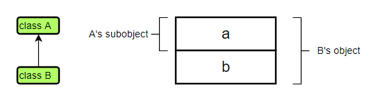
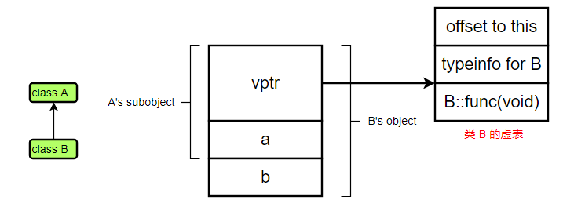
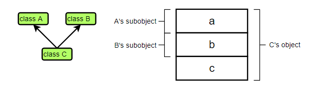
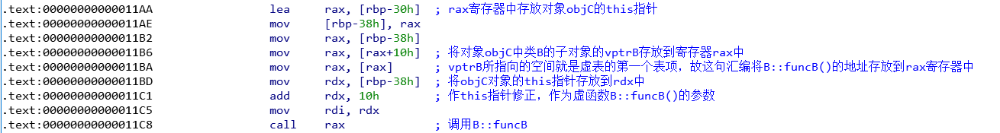
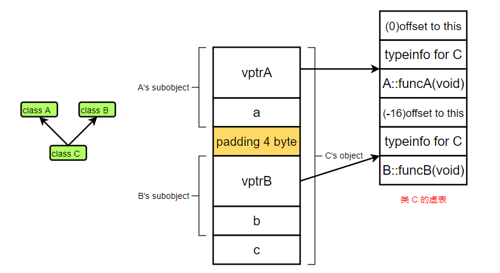
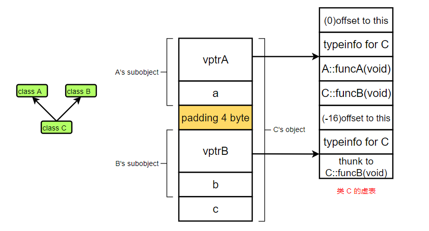
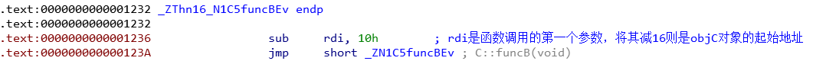

深入理解对象内存模型（一）
前言
理解 C++ 面向对象的实现机制是理解这个语言很重要的一环，可以用于举一反三，本文分别从单继承，带虚函数的单继承，多继承，带虚函数的多继承来分析 C++ 中的对象内存模型。
实验环境：
- Ubuntu 21.04
- g++ 10.3.0
- IDA 7.5.0
- [注] 以下程序都是 64 位
单继承
1 | class A { |
对于上述代码中定义的类 A 和类 B，内存模型是很简单的。如下图所示，类 B 由于继承自类 A，所以类 B 的对象中相当于有了一个 A 的子对象，这样使得语言支持上述代码中 13 行的那种隐式转换。如果从内存操作的角度看，上述的第 13 行代码仅仅是将对象 objB 的前四个字节拷贝到对象 objA 所在的内存空间中，相当于将对象 objB 截断，并将其中类 A 子对象拷贝给 objA。

带虚函数的单继承
1 | class A { |
在上述代码中，类 B 继承自类 A，同时类 B 也重写了虚函数 func。由于需要支持多态，也就是延迟绑定，也就是通过基类 A 的指针调用子类 B 中的函数 func，g++ 编译器给带虚函数的类生成了一个虚表（vtable），用来保存对应的类中虚函数的地址，同时在类对象中生成一个虚表指针（vptr），用来指向虚表中第一个虚函数表项所在的地址。下图则表示了一个类 B 对象的内存模型，其首 8 个字节是虚表指针，指向类 B 的虚表中第一个虚函数 B::func 表项，该表项就存储着虚函数 B::func 的实际地址。这样上述代码中第 16 行中对 func 函数的调用则被编译器翻译为其后所注释的代码。至于下图中类 B 的虚表有两个表项 offset to this 和 typeinfo for B 在后续再进行了解。

虚表指针和虚表这一套东西是怎么样正常运转起来实现多态机制的呢？
首先编译器在编译阶段就会为每个有虚函数的类对应生成一个虚表，虚表中保存着虚函数的地址。然后在运行阶段，创建一个类的对象时会调用构造函数，构造函数则会根据对象的类型初始化其虚表指针，使得虚表指针指向该类的虚表，这样便可以实现多态机制了。
当通过一个指针调用虚函数的时候，首先通过对象所在内存的第一个单元（即虚表指针）找到虚表，然后根据该虚函数对应的偏移（这个偏移是在编译的时候就能确定的）找到虚表中对应表项，该表项则是需要调用的函数地址。这样具体调用的是哪个虚函数，则完全由虚表指针决定了，而虚表指针又是在对象被创建的时候被初始化的，其对应到了动态运行时对象的类型，从而调用的虚函数取决于对象的实际类型，以此实现了多态机制。
多继承
1 | class A { |
对于不带虚函数的多继承模型，看起来似乎是十分简单的，不过是把类 A 和类 B 的子对象依次排列下来而已，但是你有没有思考过为什么要把类 A 的对象放在类 B 对象的前面呢？其实 C++ 标准并没有对同样是基类的 A 和 B 的子对象在子类 C 中的先后顺序作出规定，而将其实现的细节留给了编译器设计者。
在我使用的 GCC 编译器中，其实现就如下图所示。这一切看起来好像都很和谐，但是又有一个问题了，在上述的第 19 行代码中，由于 ptrB 的静态类型是 B * ，所以编译器在生成代码的时候，会将常量 1 直接赋值到 ptrB 所指向内存的第一个 4 字节单元内；而在 18 行代码中，取 objC 对象的地址来对 prtB 进行初始化，如果直接将 objC 的地址赋值给 ptrB，那么 ptrB 指向的空间并不是 B’s subobject，那么 19 的赋值语句并没有预想的结果。那么编译器是怎么保证这种继承模型下，代码生成的正确性呢？其实也很简单，在 18 行进行 this 指针修正即可，即加上一个偏移量 sizeof(A)，如上述代码 18 行注释所示！

从子类指针到基类指针的转换本身就是一种隐式转换，编译器并不是在任何情况下都会允许这种转换（将上述的 public 继承换成 private 继承试试？）。所以编译器在处理上述第 18 行代码的时候，首先会判定从 C* 类型到 B* 类型的转换是否是允许的，如果不允许则报编译错误；如果允许，则根据类继承结构进行 this 指针修正，将基类在子类中的子对象的真正地址赋值给目的指针，而不是简单的将子类对象的地址赋值给目的指针。
带虚函数的多继承
前三种情况看起来还是比较简单明了，而带虚函数的多继承则会稍微复杂了，我们通过两段不同的代码来探索在该种情况下的内存布局。所以，在进入本节之前，请确保你已经完全理解了上述的内容！
1 | class A { |

考虑第一种情况，子类 C 没有重写基类中的任何虚函数，其内存布局如下图所示。看到这个内存布局，你一定有很多的疑问吧！像往常一样，编译器还是只为类 C 生成一个虚表，但是这个虚表的结构与上述单继承的情况也有所不同；在类 C 的对象内存模型中，还有两个虚表指针，这是因为类 C 不但继承自类 A，还继承自类 B，且这两个基类中都有虚函数。接下来分析在此种内存模型下，上述的第 22 行代码和第 23 代码中对 funcB 函数的调用。首先，对于第 22 行代码，将 class B 的指针指向 class C 的对象，由于 class B 是 class C 的父类，且其在 class C 中的子对象在 class A 子对象的下面，所以将 class C 对象的地址赋值给 class B 的指针时，需要进行 this 指针修正，这样 ptrB 实际上指向 &objC + 16（16 = size A + 4 字节对齐）这个位置，也就是 vptrB 的地址，所以当通过 ptrB 调用虚函数 funcB 的时候，就好像 B 是 C 的单继承基类一样。其次，对于第 23 行代码，毋庸置疑 ptrC 就是指向 &objC 这个位置，那么通过 ptrC 调用 funcB() 怎么样才能调用到呢？注意，class C 并没有重写 B::funcB 这个虚函数，所以 ptrC 肯定是无法通过 vptrA 调到 B::funcB 的，而编译器的处理就是隐式的将 ptrC 转换为 ptrB 指针，也就是通过类似 22 行的方式调用 funcB。对于这种情况，我们特意生成汇编代码如上图所示。

疑问一：在类 C 的虚表中有两个 C 的 typeinfo，还分别对应了两个 offset to this，这是有什么用呢？
答：typeinfo 字段和 offset to this 字段是用来支持 RTTI 机制的。我想即使是一位 C++ 新手也经常用到 dynamic_cast 类型转换运算符的吧，那有没有想过这个运算符的实现原理呢？其首先就是通过虚表指针找到 typeinfo 字段来对类型进行判定，如果判定成功则进行 this 指针修正（需要这种修正的原因就是由于多继承引起的），这就需要根据 offset to this 字段来做到了。假设我们有这种语句C *ptrC = dynamic_cast<C *>(ptrB);，显然如果 ptrB 指向了一个 objC 的对象的话，这种类型转换是可以成功的，但通过上述对内存模型的分析我们可以知道，ptrB 如果指向 objC 的对象一定会发生 this 指针修正，那么 dynamic_cast 运算符肯定不能直接把 ptrB 的值赋值给 ptrC，而是要先进行修正，而到底修正多少呢？这就是 offset to this 的 值了，将 ptrB加上 offset to this 中的值，则得到了当前 objC 对象的真正地址。（上述回答纯属推理虚构，我也没研究过这个运算符的源码，也没查看汇编代码，但我觉得我的推理应该是没毛病的，希望哪位好心的读者可以帮我验证，作者的时间真的太紧了呜呜呜呜！！！）疑问二：为啥在这个内存模型中有个 padding？
答：这就是内存对齐的问题了，由于指针占 8 个字节，int 型变量占 4 个字节，而 vptrB 作为指针，就需要八字节对其，所以必须加上 4 个字节来进行对齐。（还记得 C 语言结构体对齐中提到的基础数据类型的起始地址必须是其大小的整数倍吗 - -!）
考虑第二种情况，子类 C 重写基类 B 中的虚函数 funcB，将第 15 行代码的注释符去掉。内存布局如下图所示，我们发现 objC 的内存模型和第一种情况完全没有区别，但是类 C 的虚表却有了些许变化，主要是在类 C 中对函数 funcB 重写后，C::funcB 的地址放到了 A::funcA 下面，这里不是类 A 的地盘子吗？什么意思？OK，我们稍后再来算账，还有一个变化，vptrB 指向的第一个虚表项变成了 thunk to C::funcB，这又是个什么玩意？
首先我们来考虑为什么上图没有重写虚函数的内存模型在类 C 重写了 funcB 虚函数就失效了。假设还是上图中的那种内存模型，然后用重载的 C::funcB 来替代 B::funcB，那我们调用第 23 行代码的时候会发生什么？将 ptrC 隐式转换成 ptrB 后才能调用到 C::funcB 是吧，但是这时候又要传入 ptrB 这个 this 指针作为其参数，这合理吗？这不合理，因为我类 C 既然重载了 funcB，那 C::funcB 肯定要接受一个 C* 类型的 this 指针嘛，给我一个 B* 类型的算什么嘛。所以既然类 C 重载了 funcB，那这个函数对于类 A 来说，就好像类 C 定义了一个新的 funcB 虚函数，那我加到类 A 虚表的底下不是更合理吗，这样第 23 行的代码就可以直接通过 vptrA 来找到 C::funcB，并且传入 ptrC 作为合理的 this 指针了。妙哉！

把 C::funcB 放到 A::funA 下面确实有了正当的理由，但这又引入了新的问题，对于第 22 行代码，通过 ptrB 调用 C::funcB 应该怎么办呢？这就是 thunk to C::funcB(void) 的作用了，它仅仅作了两件很简单的事情，修正 this 指针和跳转到 C::funcB 的定义处。这样，如果 ptrB 确实是指向了 objC 对象，那么其就会根据类 C 的虚表执行 C::funcB，且将 ptrB 指针修正为 objC 对象的真正地址。我们可以看到 thunk 的汇编代码，如下图所示。
